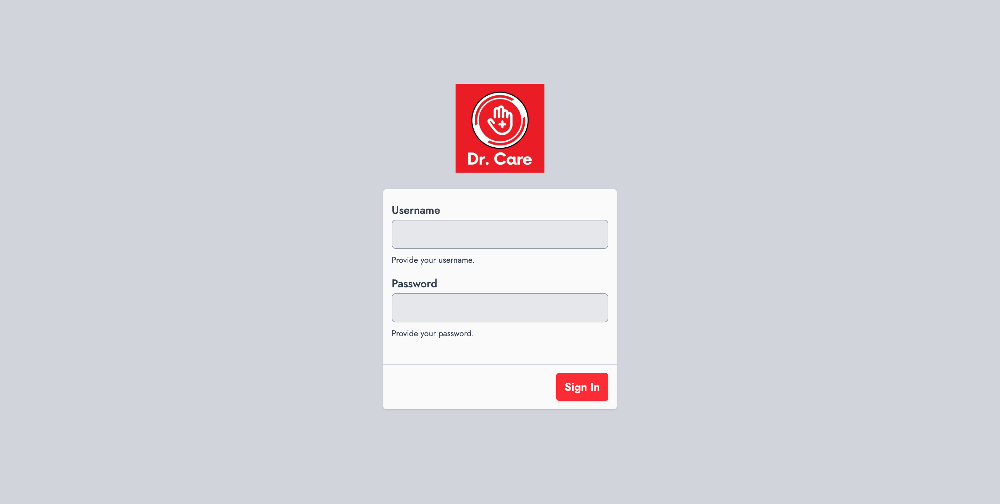

Access the Dr Care POS admin panel through the sign-in page. This is the secure entry point for all administrative functions.
Step 1
Navigate to the admin sign-in URL at
/sign-in on your Dr Care domain.Step 2
Enter your username in the Username field.
Step 3
Enter your password in the Password field.
Step 4
Click the "Sign In" button to authenticate and access the dashboard.
Note
Keep your credentials secure. The system does not expose password reset from the login screen by default. Contact a system administrator if you are locked out.
